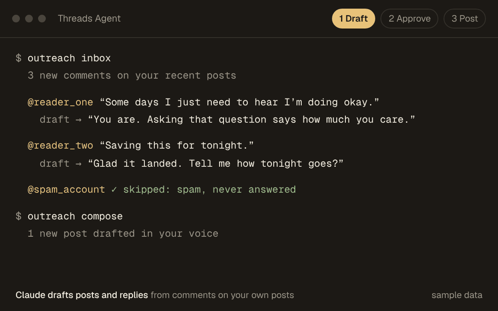

AI agents I’ve built: software that reads, decides and takes actions, with the guardrails written in code. Apps live on the Projects page.

Demo with sample data: draft, approve, post
Threads Agent
Agent · Personal
ProblemKeeping conversations going on Threads takes daily posts and replies that are hard to keep up with.
SolutionHelps me grow conversations on Threads from my own account. Claude drafts short posts in my voice that invite people to reply, collects the comments on my recent posts, and drafts a warm reply to each one. Nothing is published until I approve it.
StackPython · Claude API · Threads API · SQLite
The guardrails live in code, not just in the prompt:
At most 10 replies and 3 new posts a day, at least 5 minutes apart. Spam and bots are never answered.
It only states facts about me that I’ve listed, and flags any personal claim for me to check.
ProblemTeams forget why they made a decision, so they relitigate settled questions or quietly reverse them.
SolutionReads meeting notes and answers “why did we decide this?” Every fact has to quote the note it came from, and private notes stay out of anything you share.
StackPython · Claude API · Slack · React · Express · PostgreSQL
ProblemPeople building tool-using agents know they need evals and rarely have good ones. Existing tools run test cases and draw dashboards, but leave the hard parts to you: what to measure, how to test safely when tools act in the real world, and whether the eval would catch a regression.
SolutionGive it your agent’s repo. It runs your agent, writes an eval plan anyone can understand, gets your approval, builds the eval, proves the eval works, and runs it.
StackPython · Claude Agent SDK
How it works:
Builds first, then looks: runs the agent on realistic tasks with risky tools swapped for fakes, and reads every step of every trace.
Turns objective rules into code checks, and subjective ones into yes/no LLM judges calibrated to about 20 of your labels.
Tests the eval itself before running it, so you know it catches real problems.
Nothing is built until you approve the plan, written simply enough for a 15-year-old to follow.
Status: planning. The product requirements are written; nothing is built yet.